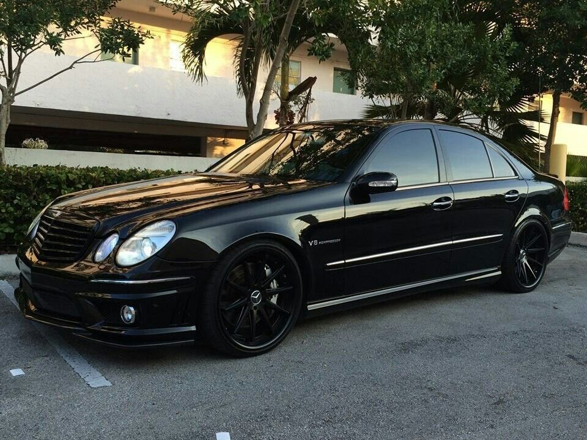

|
AMG GT
The engines were 4.0-liters engine with power 500 hp. 
|
C CLASS BLACK SERIE (W204)
The engines were 6.2-liters engine with power 443 hp. 
|
CLA 2020
The engines were 2.0-liters inline-4 engine with power 241 hp. 
|
CLS63 (W218)
The engines were 6.2-liters engine with power 500+ hp. |
E CLASS (W214)
The engines were 2.0-liters engine with power 184 hp. 
|
|
F1
V6 turbocharged engine with an Energy Recovery System (ERS).
2023 Formula One World Championship
Constructors' Championships 8 (2014, 2015, 2016, 2017, 2018, 2019, 2020, 2021)
Drivers' Championships 9 (1954, 1955, 2014, 2015, 2016, 2017, 2018, 2019, 2020)
|
G CLASS
The engines were 4.0-liter V8 engine with power 416 hp. 
|
S CLASS (w223)
The engines were 3.0-liters inline-6 engine with power 362 hp. |
C CLASS (W205)
The engines were 2.0-liters inline-4 engine with power 200 hp. 
|
E CLASS (W212R)
The engines were 3.5-liters engine with power 302hp. |
|
S CLASS (W222)
The engines were 3.0-liters v6 engine with power 362 hp. 
|
E CLASS (W211)

The engines were 3.5-liters v6 engine with power 268 hp. |
W140
The engines were 5.5 liters v8 engine with power 241 hp. |
GLC 2022
The engines were 2.0-liters inline-4 engine with power 241 hp. 
|
GLE 2024
The engines were 2.0-liters inline-4 engine with power 250 hp. 
|
|
C CLASS (W206)
The engines were 2.0-liters inline-4 engine with power 255 hp. |
E CLASS (W213 E63)
The engines were 4.0-liters v8 with power 564 hp. 
|
A CLASS 2023
The engines were 2.0-liters inline-4 engine with power 188 hp. 
|
GLB 2020
The engines were 2.0-liters inline-4 engine with power 222 hp. 
|
EQS
The EQS features one or two electric motors
The EQS 450+ delivers around 330 horsepower
is equipped with a large battery pack with a capacity of around 107.8 kWh
driving conditions and other factors, but it is expected to be around 400-500 kilometers |
|
CLE 2023
The engines were 2.0-liters with power 204 hp. 
|
CL 2020
The engines were 4.0-liters v8 with power 463 hp. 
|
SRL
The engines were 5.4-liters v8 with power 620 hp. |
AMG ONE
The engines were 1.6-liter V6 turbocharged hybrid power
with power 1000+ hp. 
|
BRABUS GT ROCKET 900
The engines were 4.5-liters v8 engine with power 900 hp. 
|